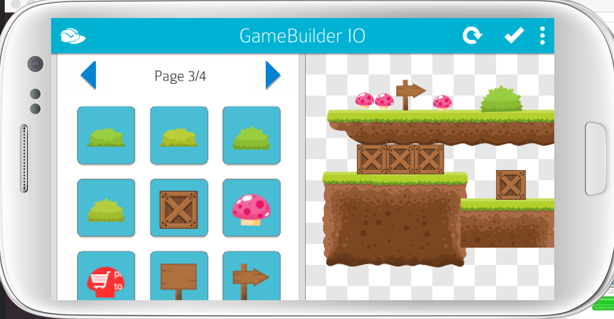
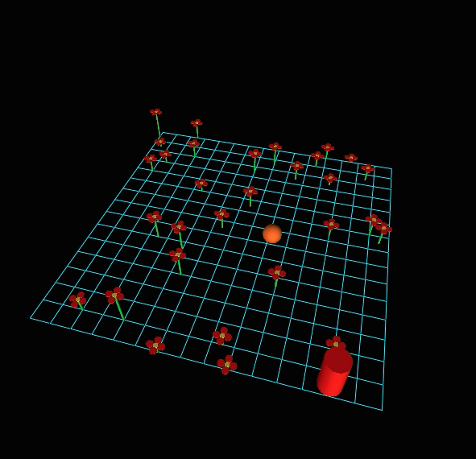
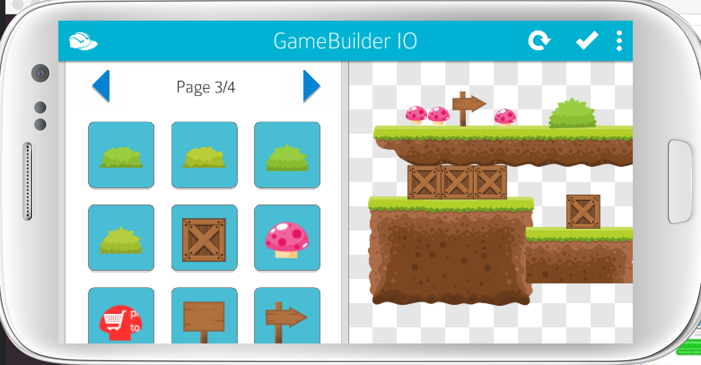
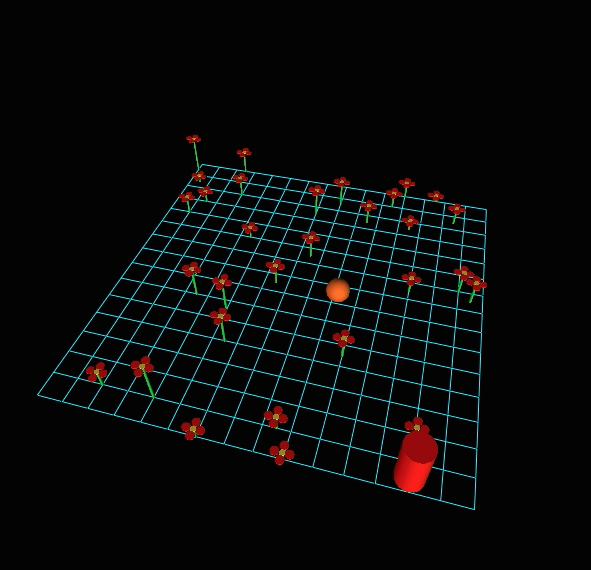

Marisa is an undergraduate student of Computer Science at UC San Diego with a planned graduation date of June 2016. She
has interned at NASA's launch complex, Kennedy Space Center as a Subject Matter Analyst for Expertise Directories. She has also worked at Lockheed Martin as a software engineer intern and at the Taiwan International Graduate Program as a
Social Networks and Human-Centered Intern. She is completing her second term tutoring an upper division Computer Science Class called
Digital Systems Lab. Current projects include working with on an application called
GameBuilder for mobile phones that will enable the production and publication of games with ease. For the last four years she has served as a core member of the quarterly hosted Beginner Programming Competition hosted by Women in Computing (WIC).
 


